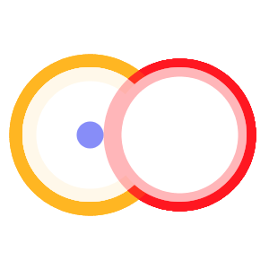

Audiovisual applications using Processing and SuperCollider
Table of Contents
1 Processing basics
Processing is a Java-based programming environment for making visualizations. A basic script has two main structures, a void setup() and a void draw() code blocks. In the former you define initialization settings, and in the latter you run time-dependent processes. The void draw() loop frequency is define using the frameRate(). The default rate is 60fps.
- Processing Reference Online
- https://processing.org/reference/
- HINT
- Install Atom editor and install the packages processing (run sketches) and processing-language (syntax highlighting)
1.1 Simple script in Processing
void setup(){ size(400, 400); // size of the window background(255); // color of backroung (monochrome) // 3 arguments for RGB colors frameRate(30); smooth(); // apply smooth filter in graphics } void draw(){ int i; // a local variable // modulo will have effect only if u comment if condition i = frameCount%256; // frameCount: starts from value 1 in void draw // : has the value 0 in void setup textAlign(CENTER); fill(i); textSize(45); text("Hello World", width/2, height/2); println(i); // print and change line frameCount if(i == 255){ noLoop(); // stop when fades out } }
Figure 1: Output of the script above (1.1)
1.2 Push style
It is possible to load different fill(), stroke(), strokeWeight() and similar functions based on pushStyle() function.
void setup(){ size(300, 300); background(255); smooth(); // frameRate(2); } void draw(){ float x = width/3; float y = height/2; // println(frameCount); smooth(); pushStyle(); stroke(255, 180, 23, 23); // yellow circle style strokeWeight(30); ellipse(x, y, y, y); pushStyle(); // it builds on the current style information stroke(255, 23, 32, 80); // red circle style strokeWeight(20); ellipse(2*x, y, y, y); pushStyle(); stroke(0, 12, 241, 120); strokeWeight(30); point(x, y); popStyle(); popStyle(); popStyle(); //saveFrame("circle.png"); }

Figure 2: The output of the script above (1.2 Push style)
1.3 Audio library for Processing
Minim is a library which enables Processing to process audio information.
import ddf.minim.*; Minim minim; AudioInput in; void setup(){ size(400, 400, P3D); frameRate(24); minim = new Minim(this); minim.debugOn(); // get a line in from Minim, default bit depth is 16 in = minim.getLineIn(Minim.STEREO, 512); } void draw(){ background(0); stroke(255); smooth(); float x = width; float y = height; float angle = 1.019; float r = 0.0; translate(width/2, height/2); r = 10.0; for(int i = 0; i < in.bufferSize()-1; i+=8){ for(int j = 1; j <= 17; j++){ for(int k = i; k <= j; k++){ rotate(2*PI/19.0*in.right.get(i)); stroke(255, (j-k)*angle); strokeWeight(1.91 + abs(in.left.get(i)*402)); beginShape(LINES); // beginShape( TRIANGLE_FAN ); vertex(in.left.get(i)*r, j*r, k*r); // left channel vertex(in.right.get(i)*r*x/5,i*r, -j*r); // right channel endShape(); } } } } void stop(){ // always close Minim audio classes when you are done with them in.close(); minim.stop(); super.stop(); }
2 SC3 and Processing via OSC
Processing OSC communication is based on the oscP5 library.
2.1 Send OSC messages from Processing to SC3
- Run this script in Processing
- see oscP5sendReceive
import oscP5.*; import netP5.*; OscP5 oscP5; NetAddress myRemoteLocation; void setup() { size(400,400); frameRate(25); /* start oscP5, listening for incoming messages at port 12000 */ oscP5 = new OscP5(this,12000); /* myRemoteLocation is a NetAddress. a NetAddress takes 2 parameters, * an ip address and a port number. myRemoteLocation is used as parameter in * oscP5.send() when sending osc packets to another computer, device, * application. */ myRemoteLocation = new NetAddress("127.0.0.1",12000); } void draw() { background(0); } void mousePressed() { OscMessage myMessage = new OscMessage("/test"); myMessage.add(int(random(123))); /* add an int to the osc message */ /* send the message */ oscP5.send(myMessage, myRemoteLocation); }
- Run this script in SC3
thisProcess.openUDPPort(12000); // open port 12000 to rcv from p5 thisProcess.openPorts; // list all open ports o = OSCFunc({|msg, time, addr, recvPort| \matching.postln; msg.postln; }, '/test'); o.free;
2.2 Send OSC message from SC3 to Processing
- Run this script in Processing
import oscP5.*; import netP5.*; OscP5 oscP5; float x; // global variable void setup() { size(400, 300); frameRate(24); background(0); smooth(); OscProperties properties = new OscProperties(); properties.setListeningPort(47120); // osc receive port (from sc) oscP5 = new OscP5(this, properties); } void oscEvent(OscMessage msg) { if (msg.checkAddrPattern("/sc3p5")) { x = msg.get(0).floatValue(); // receive floats from sc } } void draw() { background(x, x, x); println("POST: ", x); // draw rect stroke(256-x/2, 256-x*abs(sin(x)), 256-x/4); strokeWeight(4); fill(256-x/2, 256-x, 256-x*abs(sin(x))); translate(width/2, height/2); rotate(x%64); rect(x%64, x%64, x*abs(sin(x))%128, x*abs(sin(x))%128, 6); // saveFrame("./img/rect###.png"); }
- Run this script in SC3
s.boot; n = NetAddr("127.0.0.1", 47120); // open 47120 on localhost server ( SynthDef(\blip, { | freq = 440, amp = 0.85, att = 0.01, rel = 0.06, ffreq = 1000 | var sig, env, lfo; sig = SinOsc.ar(freq, 0, amp); env = EnvGen.ar(Env.perc(att, rel), doneAction:2); lfo = SinOsc.kr(rel * ffreq); Out.ar(0, Pan2.ar(RHPF.ar(sig*env, ffreq), SinOsc.kr(211*lfo))) }).add; ) Synth(\blip); ( f = fork { loop { 256 do: { |i| n.sendMsg("/sc3p5", i.asFloat); // send OSC message to P5 Synth(\blip, [\freq, 440+i, \ffreq, 1000+i*2]); ((i+1).reciprocal*2).wait; } } }; ) f.stop;
The output of these two programs looks like the video below.
2.3 SuperCollider client for Processing
There is a SuperCollider library (processing-sc) which makes possible to send message to sclang.
import oscP5.*; import netP5.*; import supercollider.*; Synth synthTri; Synth synthSaw; void setup(){ size(400, 400); background(0); synthTri = new Synth("lftri"); synthSaw = new Synth("lfsaw"); synthTri.set("amp", 0.0); synthSaw.set("amp", 0.0); synthTri.create(); synthSaw.create(); } void draw(){ synthTri.set("amp", 0.1); synthTri.set("freq", 200+mouseX); synthSaw.set("amp", 0.1); synthSaw.set("freq", 200+mouseY); }
s.waitForBoot{
SynthDef("lftri", { | freq = 400, amp = 0.1 |
Out.ar(0, FreeVerb.ar(LFTri.ar(freq, 0, amp))!2)
}).add;
SynthDef("lfsaw", { | freq = 400, amp = 0.1 |
Out.ar(0, FreeVerb.ar(LFSaw.ar(freq, 0, amp))!2)
}).add;
}
3 supercolliderjs & processingjs
3.1 processingjs
You can take the advantage of javascript to implement Processing sketches on the web.
- Quickstart
- http://processingjs.org/articles/jsQuickStart.html
- Download
- http://processingjs.org/download/
You need 3 parts to run a script on the web.
- An html file, for convenience assume an
index.html - A processing script
- The processing.min.js
In the directory that we have the index.js we create a src/ folder which contains our *.pde sketch. The processingjs code is retrieved from the web.
3.1.1 index.html
<!DOCTYPE html> <html> <head> <title>Hello Web - Processing.js Test</title> <script src="https://raw.githubusercontent.com/processing-js/processing-js/v1.4.8/processing.min.js"></script> </head> <body> <h1>Processing.js Test</h1> <p>This is my first Processing.js web-based sketch:</p> <canvas data-processing-sources="./src/processingjs_mouseOver.pde"></canvas> </body> </html>
3.1.2 processingjs
3.1.3 Processing script
void setup(){ size(400, 400, P3D); frameRate(8); } void draw(){ background(0); stroke(255); smooth(); float x = width; float y = height; float angle = 1.019 * frameCount%24; float r = 0.0; translate(width/2, height/2); r = 10.0; for(int i = 0; i < int(mouseX); i+=3){ for(int j = 1; j <= (int(mouseY)/3); j++){ for(int k = i; k <= j; k++){ rotate(2*PI/19.0*i); stroke(255, 23, 55, (j-k)*angle); strokeWeight(1.91 + abs(i*402)); beginShape(LINES); // beginShape( TRIANGLE_FAN ); vertex(r, j*r, k*r); // left channel vertex(r*x/5,i*r, -j*r); // right channel endShape(); } } } }
- Preview on html file
- Mouse over the image to interact with it. Start from top left corner.
3.2 supercollidejs
You can install SuperCollider on Atom editor, which is shipped with supercollidejs.
- See online docs
- http://supercolliderjs.readthedocs.io/en/latest/configuration.html
- SuperCollider package for Atom
- https://atom.io/packages/supercollider
3.2.1 Print sclang output on your browser
The script below prints the output of sclang ((1..10).asString) in your browser. You have to make a folder in your supercollidejs root directory in order to find the index.js file. Then you open your browser and go to 127.0.0.1:8000 to see the output.
var sc = require('../index.js'); var http = require('http'); var s = http.createServer(function(req, res){ sc.lang.boot({debug: false}).then(function(sclang) { sclang.interpret('(1..10).asString').then(function(answer){ console.log('array = ' + answer); //return answer; res.writeHead(200, { 'content-type': 'text/plain' }); res.end('ANSWER: ' + answer); console.log(answer); }, console.error); }); }); s.listen(8000);